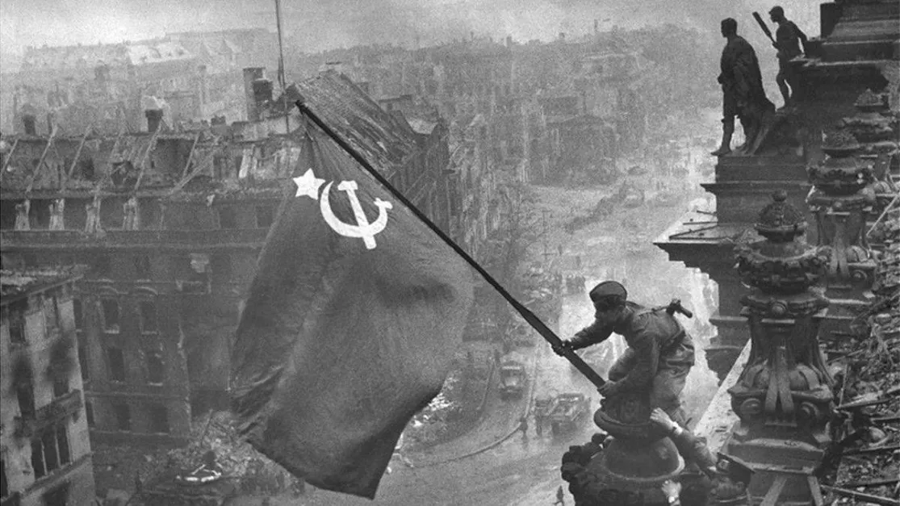

Participação
A participação da União Soviética na Segunda Guerra Mundial foi uma das mais cruciais para o desfecho do conflito. A invasão alemã em 1941, conhecida como Operação Barbarossa, marcou o início do envolvimento soviético. Em 22 de junho de 1941, a Alemanha Nazista invadiu a União Soviética em uma ofensiva surpresa ao longo da Frente Oriental, avançando rapidamente e conquistando territórios significativos. Cidades importantes como Leningrado (atual São Petersburgo) foram cercadas, e as forças alemãs avançaram em direção a Moscou.
Batalhas
No entanto, a Batalha de Stalingrado, que ocorreu entre agosto de 1942 e fevereiro de 1943, mudou o curso da guerra. As forças soviéticas conseguiram conter o avanço alemão e cercar o 6º Exército alemão na cidade de Stalingrado (atual Volgogrado). Após meses de combates intensos, os alemães se renderam em fevereiro de 1943, marcando uma vitória histórica para a URSS e o início de sua ofensiva na Frente Oriental.
Outra batalha decisiva foi a de Kursk, entre julho e agosto de 1943. As forças soviéticas detiveram a última grande ofensiva alemã na Frente Oriental, reforçando sua superioridade tática e tecnológica. A partir de 1944, as forças soviéticas iniciaram uma série de ofensivas, avançando pelo território ocupado pelos alemães e libertando países como Ucrânia, Bielorrússia, Polônia, Romênia e Hungria.
A União Soviética combateu não apenas a Alemanha Nazista, mas também outras potências do Eixo, como a Itália fascista e o Japão imperial. Após a derrota na Batalha de Stalingrado, a Alemanha começou a enfrentar uma série de reveses em outros fronts, incluindo a frente ocidental contra os Aliados.
Além disso, a URSS recebeu importante apoio material dos Aliados ocidentais, especialmente dos Estados Unidos e do Reino Unido, através do programa Lend-Lease. Isso incluiu armas, munições, alimentos, veículos e outros suprimentos cruciais que ajudaram a sustentar a capacidade de luta dos soviéticos.
Consequências e Reconstrução
A União Soviética pagou um preço humano terrível durante a guerra. Estima-se que mais de 27 milhões de cidadãos soviéticos perderam suas vidas, tornando-os o país mais afetado em termos de perdas humanas durante o conflito.

Em fevereiro de 1945, durante a Conferência de Yalta, na Crimeia, os líderes dos Aliados (Estados Unidos, Reino Unido e União Soviética) discutiram o futuro da Europa pós-guerra. A URSS garantiu territórios e influência em países da Europa Oriental, o que teve implicações duradouras para a Guerra Fria que se seguiria após o fim da Segunda Guerra Mundial.
A contribuição significativa da União Soviética para derrotar a Alemanha Nazista forçou a rendição do Terceiro Reich e a capitulação alemã em maio de 1945. A vitória na Europa abriu caminho para a rendição incondicional do Japão alguns meses depois, encerrando efetivamente a Segunda Guerra Mundial em setembro de 1945.
Em resumo, a participação da União Soviética na Segunda Guerra Mundial foi essencial para a derrota da Alemanha Nazista e a vitória dos Aliados. A determinação, os sacrifícios humanos e os esforços de mobilização da URSS foram fundamentais para mudar o curso da guerra e influenciaram profundamente o cenário político global nas décadas seguintes. A história da participação soviética na Segunda Guerra Mundial continua sendo lembrada e honrada na Rússia e em muitos países da antiga União Soviética.